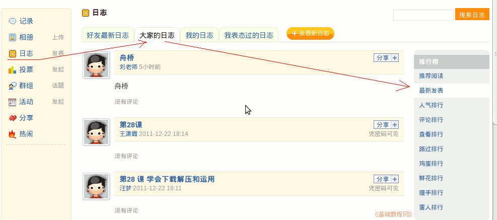

2011-2012 第一学期七年级电脑操作基础教学课程设计
作者：TeliuTe 来源：基础教程网
六、与好友交流 返回目录 下一课学习目标：学会添加好友，访问好友的空间；
注意事项：添加好友后会，要等对方批准，会有一个短消息；
1、与好友交流
1）登录自己的空间；
2）点左边的“日志－大家的日志－最新发表”；

3）点击“好友－添加好友－可能认识的人－当前在线－加为好友”；
4）点击好友的用户名，访问TA的空间；
课后记 2011-9-13 21:51：
不用那么好言好语的，本节学习了与好友交流的基础知识，如果你成功地完成了练习，请继续学习下一课内容；
本教程由86团学校TeliuTe制作|著作权所有
基础教程网：http://teliute.org/
美丽的校园……
转载和引用本站内容，请保留版权信息和本站链接。